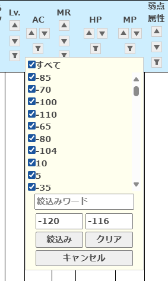

更新 2025年08月17日
絞り込み機能強化
フィルターボタンのダイアログに最小値と最大値のBOXを追加しました。
「Lv.」「AC」「MR」「HP」「MP」の各項目に最小値と最大値の入力欄を追加しました。
一方しか入力がない場合はそれ以上・それ未満を表示します。
モンスター一覧表
「Lv.」「AC」「MR」「HP」「MP」の各項目に最小値と最大値の入力欄を追加しました。
一方しか入力がない場合はそれ以上・それ未満を表示します。
更新 2025年08月05日
スキル箱化対応
「騎士道」アップデート 2024.11.20. 09:55 一部対応
スキル使用条件：装備を追加
モンスター一覧表
一部スキルを削除しスキル選択箱を登録 (＊下記[]のモンスターは未収録・狩り場図鑑ベース)- 一部のモンスターがドロップする唯一～高級等級の魔法書(蘇生含む)を削除しました。
- [アステリオス]、カヘル ヤヒ、[抑制したハルパス]、[ハルパス]
- 支配の塔各階層ボスモンスター11種(覚醒ボス含む)、傲慢の塔各階層ボスモンスター11種
- [ラザルス]、ヴァラカス、パプリオン、リンドビオル、アンタラス、[エルシャベ]、[クイーン センチュリオン]
- 等級別の魔法書(スキル)選択箱をドロップするモンスターを追加しました。
- 唯一スキル選択箱 [アステリオス3段階]、カヘル ヤヒ、[ハルパス]、[覚醒したデス グリムリーパー]
- 唯一蘇生スキル選択箱 [アステリオス3段階]、カヘル ヤヒ、[ハルパス]、[覚醒したデス グリムリーパー]
- 神話スキル選択箱 [アステリオス2/3段階]、カヘル ヤヒ、[ハルパス]、デス グリムリーパー(支配の塔)、[覚醒したデス グリムリーパー]、ヴァラカス、パプリオン、リンドビオル、アンタラス、憤怒のバルログ
- 神話蘇生スキル選択箱 [ハルパス]、デス グリムリーパー(支配の塔)、[覚醒したデス グリムリーパー]、ヴァラカス、パプリオン、リンドビオル、アンタラス、憤怒のバルログ
- 伝説のスキル選択箱 [アステリオス1/2/3段階]、カヘル ヤヒ、[ハルパス]、デス グリムリーパー、支配の塔各階層覚醒ボスモンスター11種、[エルシャベ]、憤怒のバルログ、[ラザルス]、ヴァラカス、パプリオン、リンドビオル、アンタラス
- 伝説蘇生スキル選択箱 [ハルパス]、支配の塔各階層ボスモンスター11種(覚醒ボス含む)、憤怒のバルログ、[ラザルス]、ヴァラカス、パプリオン、リンドビオル、アンタラス
- 英雄スキル選択箱 [アステリオス1/2/3段階]、カヘル ヤヒ、[ハルパス]、支配の塔各階層ボスモンスター11種(覚醒ボス含む)、憤怒のバルログ、ヴァラカス、パプリオン、リンドビオル、アンタラス、[ラザルス]、デス グリムリーパー(傲慢の塔最上階)、[エルシャベ]
- 英雄蘇生スキル選択箱 [ハルパス]、支配の塔各階層ボスモンスター11種(覚醒ボス含む)、憤怒のバルログ、ヴァラカス、パプリオン、リンドビオル、アンタラス、傲慢の塔各階層ボスモンスター11種、[ラザルス]、[クイーン センチュリオン]
- 希少スキル選択箱 [アステリオス1/2/3段階]、カヘル ヤヒ、[抑制したハルパス]、支配の塔各階層ボスモンスター11種(覚醒ボス含む)、ヴァラカス、パプリオン、リンドビオル、アンタラス、傲慢の塔各階層ボスモンスター11種、[ラザルス]
- 希少蘇生スキル選択箱 [抑制したハルパス]、支配の塔各階層ボスモンスター11種(覚醒ボス含む)、ヴァラカス、パプリオン、リンドビオル、アンタラス、傲慢の塔各階層ボスモンスター11種、[ラザルス]
- 高級スキル選択箱 [アステリオス1/2/3段階]、カヘル ヤヒ、[抑制したハルパス]、デス グリムリーパー(支配の塔)、[覚醒したデス グリムリーパー]、傲慢の塔各階層ボスモンスター11種
- 高級蘇生スキル選択箱 [抑制したハルパス]、デス グリムリーパー(支配の塔)、[覚醒したデス グリムリーパー]、傲慢の塔各階層ボスモンスター11種
ドロップ一覧表
一部スキルを削除しスキル選択箱を登録 (＊上記[]のモンスターは未収録・狩り場図鑑ベース)スキル一覧表
スキル選択箱以外の従来ドロップとスキル選択箱を展開したスキルアイテムを統合。スキル使用条件：装備を追加
更新 2025年07月10日
スキル一覧表追加・ページ体裁調整
スキル一覧表を追加
スキル一覧表ドロップとチュートリアルクエストNPCから購入などスキルの入手方法の表を作成。- Skillと入手方法の詠唱コストや効果・能力などをブロックで表示
- 表の概要
- スキルテーブルTSV本体
- skill_domain_identification：通し番号やスキル名称
- skill_domain_eligible_character：習得クラスとエルフ属性
- skill_domain_tendency：アクティブ/パッシブ、性向など
- skill_domain_resource：詠唱コスト消費HPMPと材料・触媒
- skill_domain_effect：スキルの効果持続時間、対象、効果・性能など
- skill_domain_acquisition：習得条件。習得レベル、取得方法、NPC価格
- skill_domain_dropmob：ドロップモンスター(レギュラー・蘇生)
- skill_domain_notes：備考
- 習得レベルやドロップモンスターに未収載があります。
覚えていないスキルはスキルウィンドウの説明のまま。
持っていないスキルは魔法書や書板などアイテム説明に書いてある情報などが未収載
- 折りたたみ表示・クラス表示ボタン
- 初期表示は全件折りたたみ
- クラス名ボタンをクリックするとそのクラスのみを表示
- 完全一致はクラス固有スキル、部分一致は共通一般魔法を含めたスキルを表示
ページの体裁調整
ページのリンクの追加。スタイルの変更。更新 2024年11月21日
漢字変換辞書テキストを更新。ページの体裁調整
漢字変換辞書テキストを更新
リネージュリマスターItemMonster辞書2024(ATOK)リネージュリマスターItemMonster辞書2024(IME)
ページの体裁調整
辞書更新履歴をそれぞれの辞書ページに移動 CSS、アイコンなどの調整更新 2024年11月13日
DropListを公開
MonsterListのアイテムからの逆引き
- DropItemとMonsterの2列
- Drop：アイテム名の辞書よみで並んでいます
- Monster：モンスター名（生息地）です。「★」はボスです。
- 表示順など
- 初期表示は「b-」「c-」「(蘇生)」「魔法書(」などの接頭語や接尾語を除いた名称で並べています。
例：「精霊の水晶(ハリケーン)」は【せいれいのすいしょう～】ではなく【はりけーん】の場所に並んでいます。 - 「－ドロップなし」「アデナ」も入っています。
- 一つのアイテムに名前が同じモンスターが含まれることがあります。
- MonsterListと同じようにフィルターが使えます。「フェンサーの書」を指定してスキルだけを表示したりできます。
- 初期表示は「b-」「c-」「(蘇生)」「魔法書(」などの接頭語や接尾語を除いた名称で並べています。
更新 2024年11月11日
漢字変換辞書テキストを更新
リネージュリマスターItemMonster辞書2024(ATOK)の更新
リネージュリマスターItemMonster辞書2024(IME)の更新
リネージュリマスターItemMonster辞書2024(IME)の更新
更新 2024年10月30日
モンスターリスト/漢字変換辞書テキストを公開
モンスターリスト
狩場図鑑を入力していた資料を一覧できるようにしたものです漢字変換辞書テキスト
狩り場図鑑の入力中正しい名称が面倒になってきたので副産物のIMEとATOKの辞書も公開。略語やゲーム用語、顔文字は収録していません。狩場図鑑の「場所」「モンスター名」「ドロップアイテム名」を収録しています。
更新履歴
- 2025年08月05日スキル選択箱対応。Monsters・Drops！
- 2025年07月10日スキル一覧表追加・ページ体裁調整
- 2024年11月21日ATOK/IME辞書テキストファイル更新。ページ体裁の調整
- 2024年11月13日アイテムからドロップするモンスターの一覧を追加
- 2024年11月11日ATOK/IME辞書テキストファイル更新
- 2024年10月30日初公開